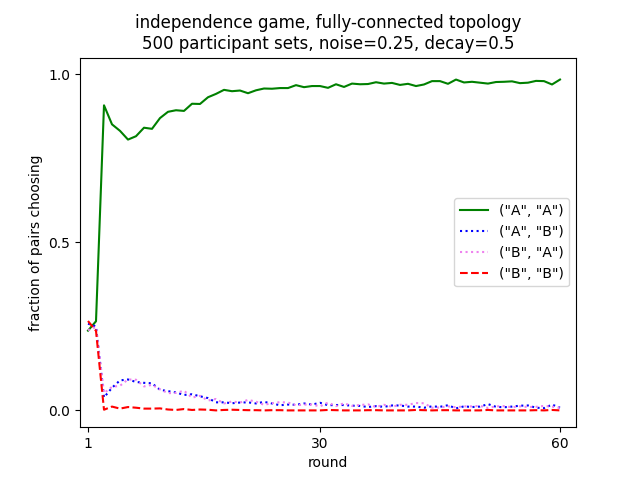
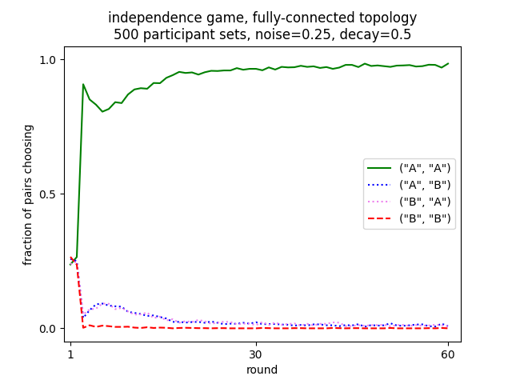

Multi-agent network example¶
In this example we describe an experiment to be modeled involving multiple agents interacting in constantly varying ways. It is a coöperative binary choice game played by multiple players whose connectivity to one another varies, in an effort to understand how their networks of interconnectedness facilitate or hinder their abilities to succeed at the game. This closely follows some work described in Gonzalez et al (2025) [1].
Games¶
The binary choice games are two from a spectrum of games described in Balliet et al. (2016) [2]. The games in this spectrum are played between two players conventionally referred to as Mary and John, exploring a taxonomy of dimensions of social interaction. For this example we use just two of the games at the extremes of one of the dimensions, fully independent and fully interdependent. In both games the players will each earn five points if they both “coöperate” by each picking A, and will each earn nothing if they both “defect” by by each picking B. The difference is in the outcome if one picks A and the other B. In the independence game

each player receives the five point reward whenever they pick A, regardless of the other player’s choice. In the interdependence game

each player receives the five point reward whenever the other play picks A, regadless of this player’s choice:
For this example each player makes their choices with no knowledge of the reward matrices, nor any knowledge of the other player’s choices. All they know if what they themselves choose, and what rewards they receive.
In a normally played single independence game of many rounds we might expect both players to quickly settle on choosing A since that always rewards them. Naïvely we might similarly expect that in a similar version of the interdependence game for each player to essentially play randomly, since over the course of a single choice which choice they made has no effect on their reward. However there is a deep subtlety to this game where without any explicit transfer of information between the players, over the course of several moves they will be driven to both pick A. This is driven by a natural weighting of recent results over earlier ones, resulting in a roughly win-stay/lose-shift strategy, which curiously over a two move sequence can drive the players to coöperate.
Networks¶
For this example we are interested not in normal play between just two players, but rather small networks of players interacting with different players, and how this may modify the choices made. The networks chosen for this example are inspired by those used for a somewhat different task in Mason et al. (2008) [3] and Sloman et al. (2021) [4]. For this example we use three different networks, each with six nodes.
When we play the game at each round we will randomly select three, non-overlapping pairs of nodes, such that each node in a pair is connected in the network to the other node of that pair. Note that in the disconnected network each node is always paired with the same other node; in the ring network there are only two possible ways pairs of nodes can be connected; and in the fully connected case there are fifteen different ways the pairs of nodes can be selected. Where there are multiple ways to select pairs of nodes, at each round we randomly select a different way of pairing them, so, except in the disconnected case, at each round a node may play a different partner than it did in the previous or succeeding round.
Games and networks definitions¶
The Python code for defining the two games to be played is a dict mapping the names of the two games to further dicts mapping a tuple of the possible choices by the two players to a tuple of the outcomes for those two players.
GAMES = {"independence": {("A", "A"): (5, 5),
("A", "B"): (5, 0),
("B", "A"): (0, 5),
("B", "B"): (0, 0)},
"interdependence": {("A", "A"): (5, 5),
("A", "B"): (0, 5),
("B", "A"): (5, 0),
("B", "B"): (0, 0)}}
The code for defining the three networks to be used is a dict mapping the names of the three networks to lists of sublists, each sublist containing three 2-tuples. These sublists enumerate each of the possible ways the various nodes can be connected.
PAIRINGS = {
"disconnected": [[(0, 1), (2, 3), (4, 5)]],
"ring": [[(0, 1), (2, 3), (4,5)],
[(1, 2), (3, 4), (0, 5)]],
"fully-connected": [[(4, 5), (2, 3), (0, 1)],
[(3, 5), (2, 4), (0, 1)],
[(3, 4), (2, 5), (0, 1)],
[(4, 5), (1, 3), (0, 2)],
[(3, 5), (1, 4), (0, 2)],
[(3, 4), (1, 5), (0, 2)],
[(4, 5), (1, 2), (0, 3)],
[(2, 5), (1, 4), (0, 3)],
[(2, 4), (1, 5), (0, 3)],
[(3, 5), (1, 2), (0, 4)],
[(2, 5), (1, 3), (0, 4)],
[(2, 3), (1, 5), (0, 4)],
[(3, 4), (1, 2), (0, 5)],
[(2, 4), (1, 3), (0, 5)],
[(2, 3), (1, 4), (0, 5)]]}
From this dict we further compute constants describing the number of pairs to be played at each round, and the number of total nodes.
PAIRS = len(list(PAIRINGS.values())[0][0])
for kind in PAIRINGS.values():
for pairing in kind:
assert len(pairing) == PAIRS
NODES = 2 * PAIRS
For these networks the constant PAIRS is always 3 and the constant NODES is always 6.
The model¶
For the model we create a PyIBL Agent for each of the nodes.
PREPOPULATED_VALUE = 6
...
agents = [Agent(str(i), default_utility=PREPOPULATED_VALUE)
for i in range(1, NODES + 1)]
Note that the prepopulated value is chosen as 1.2 times the maximum possible payoff of 5 to facilitate early exploration.
To run the model we define a function run_one() which takes as parameters
#. the list of agents defined above
#. the name of the network to use
#. the name of the game to play
#. the number of sets of participants to simulate playing the game
#. the number of rounds to place for each simulated set of participants
#. a tqdm progress indicator to update after the simulation of each set of participants is completed
#. a CSVWriter object into which to write details of each round
#. and the name of a file into which to draw a plot of the results, or None simply show them on terminal as run_one() finishes.
def run_one(agents, network, game, participant_sets, rounds, progress, csv_writer, plot_file):
counts = [Counter() for i in range(rounds)]
for pp in range(participant_sets):
for a in agents:
a.reset()
for r in range(rounds):
for p in random.choice(PAIRINGS[network]):
p = random.sample(p, k=len(p)) # counterbalance
choices = tuple(agents[i].choose("AB") for i in p)
counts[r].update((choices,))
payoffs = GAMES[game][choices]
for i, j in zip(p, count()):
agents[i].respond(payoffs[j])
csv_writer.writerow((network, game, pp + 1, r + 1,
p[0], choices[0], payoffs[0],
p[1], choices[1], payoffs[1]))
progress.update()
We create Counter object to capture the number of times each possible pair of choices is made at each round.
We then iterate through the required number of sets of participants, first resetting all the agents.
The for each round we randomly pick one of the pairings of participants as described by the netword; for the disconnected network
this is always a fixed set of pairings, for the ring one of two possibiliites, and for the fully connected network
one of fifteen.
We iterate through the three pairs in the chosen pairings and play one game, having each of the two agents selected make a choice,
computing their payoffs, and responding to the agents with those payoffs, and finally record what we have done to the CSVWriter.
After all the rounds are finished we update the progress indicator.
At this point all the data for this network and game combination is generated and gathered, and we can plot the results
plt.plot(tuple(range(1, rounds + 1)),
tuple(counts[r][("A", "A")] / (participant_sets * PAIRS) for r in range(rounds)),
label='("A", "A")', color="green", linestyle="solid")
plt.plot(tuple(range(1, rounds + 1)),
tuple(counts[r][("A", "B")] / (participant_sets * PAIRS) for r in range(rounds)),
label='("A", "B")', color="blue", linestyle="dotted")
plt.plot(tuple(range(1, rounds + 1)),
tuple(counts[r][("B", "A")] / (participant_sets * PAIRS) for r in range(rounds)),
label='("B", "A")', color="violet", linestyle="dotted")
plt.plot(tuple(range(1, rounds + 1)),
tuple(counts[r][("B", "B")] / (participant_sets * PAIRS) for r in range(rounds)),
label='("B", "B")', color="red", linestyle="dashed")
plt.legend()
plt.title(f"{game} game, {network} topology\n"
f"{participant_sets} participant sets, noise={agents[0].noise}, decay={agents[0].decay}")
plt.xlim((0, rounds + 2))
plt.xticks((1, rounds / 2, rounds))
plt.xlabel("round")
plt.ylim((-0.05, 1.05))
plt.yticks((0, 0.5, 1))
plt.ylabel("fraction of pairs choosing")
if plot_file:
plt.savefig(plot_file)
else:
plt.show()
plt.clf()
Note that we plot one line for each of the four possible pairs of choices, showing the fraction of times that choice was made.
All that is left to do is iterate through the two games and three networks and call the run_one() function.
This main function uses click to parse a few command line arguments allowing the number of sets of participants,
number of rounds played by each, and noise and decay parameters of the agents to be set, though with sensible defaults
if none are explicitly specified.
This function also opens and closes the file into which the CSV data will be written, as well as creating the progress indicator.
@click.command()
@click.option("--rounds", "-r", default=DEFAULT_ROUNDS, type=int,
help="The number of rounds to play")
@click.option("--participant-sets", "-p", default=DEFAULT_PARTICIPANT_SETS, type=int,
help="The number of participant sets to simulate")
@click.option("-noise", "-s", default=DEFAULT_NOISE, type=float,
help="The IBL activation noise to use")
@click.option("--decay", "-d", default=DEFAULT_DECAY, type=float,
help="The IBL decay parameter to use")
def main(rounds, participant_sets, noise, decay):
with open("results.csv", "w", newline="") as f:
w = csv.writer(f)
w.writerow(("network,game,participant set,round,"
"player one,player one move,player one payoff,"
"player two,player two move,player two payoff").split(","))
agents = [Agent(str(i), default_utility=PREPOPULATED_VALUE, noise=noise, decay=decay)
for i in range(1, NODES + 1)]
with tqdm(total=(len(GAMES) * len(PAIRINGS) * participant_sets * rounds)) as t:
for n in PAIRINGS.keys():
for g in GAMES.keys():
run_one(agents, n, g, participant_sets, rounds,
t, w, f"{n}-{g}.png")
if __name__ == '__main__':
main()
The entire file can
be downloaded
1# Copyright 2025 Carnegie Mellon University
2# Example of networked binary choice games implemented with PyIBL
3
4import click
5from collections import Counter
6import csv
7from datetime import datetime
8from itertools import count
9import matplotlib.pyplot as plt
10from pyibl import Agent
11import random
12from tqdm import tqdm
13
14DEFAULT_ROUNDS = 60
15DEFAULT_PARTICIPANT_SETS = 500
16
17DEFAULT_NOISE = 0.25
18DEFAULT_DECAY = 0.5
19
20GAMES = {"independence": {("A", "A"): (5, 5),
21 ("A", "B"): (5, 0),
22 ("B", "A"): (0, 5),
23 ("B", "B"): (0, 0)},
24 "interdependence": {("A", "A"): (5, 5),
25 ("A", "B"): (0, 5),
26 ("B", "A"): (5, 0),
27 ("B", "B"): (0, 0)}}
28
29PREPOPULATED_VALUE = 6
30
31PAIRINGS = {
32 "disconnected": [[(0, 1), (2, 3), (4, 5)]],
33 "ring": [[(0, 1), (2, 3), (4,5)],
34 [(1, 2), (3, 4), (0, 5)]],
35 "fully-connected": [[(4, 5), (2, 3), (0, 1)],
36 [(3, 5), (2, 4), (0, 1)],
37 [(3, 4), (2, 5), (0, 1)],
38 [(4, 5), (1, 3), (0, 2)],
39 [(3, 5), (1, 4), (0, 2)],
40 [(3, 4), (1, 5), (0, 2)],
41 [(4, 5), (1, 2), (0, 3)],
42 [(2, 5), (1, 4), (0, 3)],
43 [(2, 4), (1, 5), (0, 3)],
44 [(3, 5), (1, 2), (0, 4)],
45 [(2, 5), (1, 3), (0, 4)],
46 [(2, 3), (1, 5), (0, 4)],
47 [(3, 4), (1, 2), (0, 5)],
48 [(2, 4), (1, 3), (0, 5)],
49 [(2, 3), (1, 4), (0, 5)]]}
50
51PAIRS = len(list(PAIRINGS.values())[0][0])
52for kind in PAIRINGS.values():
53 for pairing in kind:
54 assert len(pairing) == PAIRS
55NODES = 2 * PAIRS
56
57def run_one(agents, network, game, participant_sets, rounds, progress, csv_writer, plot_file):
58 counts = [Counter() for i in range(rounds)]
59 for pp in range(participant_sets):
60 for a in agents:
61 a.reset()
62 for r in range(rounds):
63 for p in random.choice(PAIRINGS[network]):
64 p = random.sample(p, k=len(p)) # counterbalance
65 choices = tuple(agents[i].choose("AB") for i in p)
66 counts[r].update((choices,))
67 payoffs = GAMES[game][choices]
68 for i, j in zip(p, count()):
69 agents[i].respond(payoffs[j])
70 csv_writer.writerow((network, game, pp + 1, r + 1,
71 p[0], choices[0], payoffs[0],
72 p[1], choices[1], payoffs[1]))
73 progress.update()
74 plt.plot(tuple(range(1, rounds + 1)),
75 tuple(counts[r][("A", "A")] / (participant_sets * PAIRS) for r in range(rounds)),
76 label='("A", "A")', color="green", linestyle="solid")
77 plt.plot(tuple(range(1, rounds + 1)),
78 tuple(counts[r][("A", "B")] / (participant_sets * PAIRS) for r in range(rounds)),
79 label='("A", "B")', color="blue", linestyle="dotted")
80 plt.plot(tuple(range(1, rounds + 1)),
81 tuple(counts[r][("B", "A")] / (participant_sets * PAIRS) for r in range(rounds)),
82 label='("B", "A")', color="violet", linestyle="dotted")
83 plt.plot(tuple(range(1, rounds + 1)),
84 tuple(counts[r][("B", "B")] / (participant_sets * PAIRS) for r in range(rounds)),
85 label='("B", "B")', color="red", linestyle="dashed")
86 plt.legend()
87 plt.title(f"{game} game, {network} topology\n"
88 f"{participant_sets} participant sets, noise={agents[0].noise}, decay={agents[0].decay}")
89 plt.xlim((0, rounds + 2))
90 plt.xticks((1, rounds / 2, rounds))
91 plt.xlabel("round")
92 plt.ylim((-0.05, 1.05))
93 plt.yticks((0, 0.5, 1))
94 plt.ylabel("fraction of pairs choosing")
95 if plot_file:
96 plt.savefig(plot_file)
97 else:
98 plt.show()
99 plt.clf()
100
101
102@click.command()
103@click.option("--rounds", "-r", default=DEFAULT_ROUNDS, type=int,
104 help="The number of rounds to play")
105@click.option("--participant-sets", "-p", default=DEFAULT_PARTICIPANT_SETS, type=int,
106 help="The number of participant sets to simulate")
107@click.option("-noise", "-s", default=DEFAULT_NOISE, type=float,
108 help="The IBL activation noise to use")
109@click.option("--decay", "-d", default=DEFAULT_DECAY, type=float,
110 help="The IBL decay parameter to use")
111def main(rounds, participant_sets, noise, decay):
112 with open("results.csv", "w", newline="") as f:
113 w = csv.writer(f)
114 w.writerow(("network,game,participant set,round,"
115 "player one,player one move,player one payoff,"
116 "player two,player two move,player two payoff").split(","))
117 agents = [Agent(str(i), default_utility=PREPOPULATED_VALUE, noise=noise, decay=decay)
118 for i in range(1, NODES + 1)]
119 with tqdm(total=(len(GAMES) * len(PAIRINGS) * participant_sets * rounds)) as t:
120 for n in PAIRINGS.keys():
121 for g in GAMES.keys():
122 run_one(agents, n, g, participant_sets, rounds,
123 t, w, f"{n}-{g}.png")
124
125
126if __name__ == '__main__':
127 main()
Results¶
Running the interdependence game in the disconnected network we see that each, fixed pair fairly quickly settles on mutual coöperation (both players selecting A)
But as the number of connections is increased, with various pairs intermixed, it becomes harder for the players to settle on the optimal play

Running the independence game again players quickly settle on optimal play. But, since they don’t depend upon their partners’ moves in any way, as the number of interconnections in the network increases this behavior does not degrade
 
